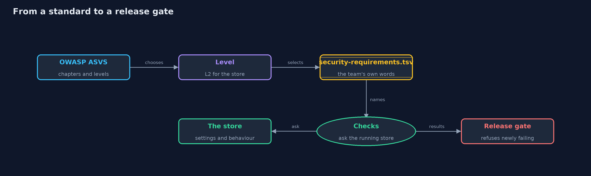
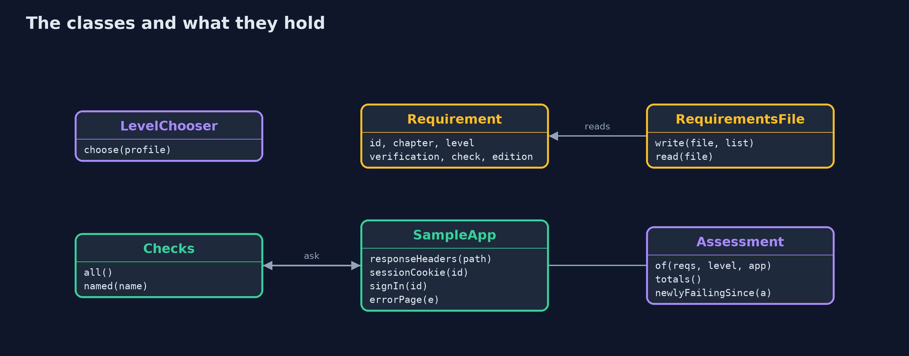
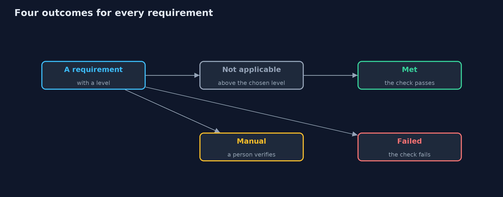
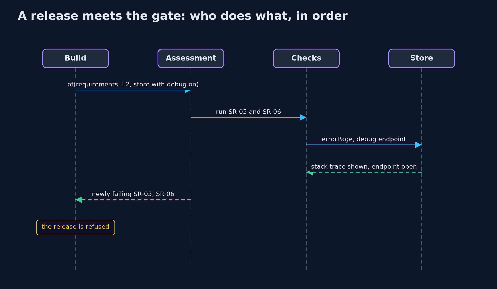

Security Requirements with OWASP ASVS
src/main/java/com/jk/explore/security/asvs/
├── Assessment.java Every requirement judged against one application at one level: met, failed, not applicable, or still to be checked by a person
├── AsvsDemo.java Runs the story in five numbered acts: choose a level, write requirements down, check them, report coverage, and count the bill
├── Catalogue.java The store's and the bank's requirements
├── Checks.java The automated and configuration checks, by name
├── Level.java The three verification levels of the standard: each one includes everything below it
├── LevelChooser.java A small decision model for the verification level
├── Profile.java What an application holds and does, which decides how much verification it needs
├── Requirement.java One security requirement as the team writes it down: its own id, the chapter of the standard it comes from, the lowest level it applies to, a short statement in the team's own words, how it is verified, the check that verifies it (empty for manual ones), and the edition of the standard it was mapped against
├── RequirementsFile.java Requirements kept as a plain tab-separated file next to the code, so they are reviewed and versioned like code
├── SampleApp.java A small online store that runs in the same process, so the checks can ask it questions: what headers a page carries, what the session cookie looks like, how a password is stored, whether sign-in issues a new session id, and what an error page shows
└── Verification.java How a requirement is verified
A verification standard says what a secure application must do; a team chooses a level, writes the requirements down as data in its own words, verifies most of them with checks that run on every build, and reports what is met, what failed and what still needs a person.
"Make it secure" is not a requirement anyone can test. The OWASP Application Security Verification Standard (ASVS) turns it into hundreds of specific, checkable statements, grouped into chapters such as Authentication, Session Management and Configuration, and sorted into three levels: L1 for every application, L2 for applications that hold sensitive data or customer accounts, and L3 for the most critical, such as banking.
This project shows how a team uses it. A small decision model chooses the level from what the application holds and does, and prints its reasons. The team writes its requirements down as data, in its own words, each with an id, the chapter it comes from, its level, and how it is verified: by an automated test, a configuration check, or a person. Checks ask a running store questions, a coverage report shows what is met, failed, not applicable or still manual, and a release gate refuses a build that makes a met requirement fail.
The statements here are the team's own short paraphrases, not the text of the standard. It maps to OWASP ASVS 5.0, OWASP Top 10 2025 A06 Insecure Design, NIST SSDF practices PW.1 and PW.7, and the Security Requirements practice of OWASP SAMM.
Why this domain: The bank appears as the second profile, to show how the level changes what applies.
The idea in everyday terms
Think of a building inspector's checklist. The building code is the standard: thousands of rules, more of them for a hospital than for a garden shed. A builder who waits for the inspector at the end finds every problem at once. A careful builder picks the rules that apply to this building, writes them on a list, and checks most of them every evening: the fire doors close, the exits are lit. A few still need the inspector's eye. And when the code is revised, the list is updated.
The scenario
An online store needs to show that it is secure enough for the data it holds. The demo chooses its level, writes fourteen requirements down as data, runs ten checks against the store as it runs, reports coverage by chapter, catches a regression before release, and counts what the standard does not do.
Run
./gradlew run
The demo tells the story in 5 acts, each printing exact numbers that the tests check:
| Act | What it shows |
|---|---|
| 1. Choosing a level | A brochure site is L1, the store L2 and the bank L3, each with printed reasons; of 14 requirements, L1 applies 8, L2 applies 12 and L3 applies all 14. |
| 2. Requirements written down as data | Fourteen requirements in a tab-separated file that reads back the same, each with its chapter, level and verification: 6 by automated test, 4 by configuration check, 4 by a person. |
| 3. Checks that ask the running store | Ten checks ask the running store questions and nine pass; staff sign-in without a second factor fails, and a build that stores passwords as plain SHA-256 fails the password check. |
| 4. Coverage and gaps | At L2 the store has 8 met, 1 failed, 3 manual and 2 not applicable; a release with the debug flag on makes SR-05 and SR-06 newly fail and is refused; with staff MFA, nothing fails and 3 remain for people. |
| 5. The bill | At the bank's L3, 4 requirements need a person; a standard is not a threat model; SR-14 was mapped against the older edition 4.0.3 and must be reviewed; a green report means only that these checks pass. |
Test
./gradlew test
18 tests in ChecksAndAssessmentTest, DemoRunsTest, LevelAndRequirementsTest. The level model, the requirements file, the checks and the coverage report are deterministic Java. The only random values, a password salt and session ids, are never printed, so the golden output is the same on every run and needs only a JDK.
What the simulation got right, and what it left out
The store is a small application in the same process, so every check is exact. The decision model for the level is a simplification of the standard's guidance, and the fourteen requirements are a sample, paraphrased in the team's words, not the standard's text. The password check computes a real PBKDF2 hash, but prints only pass or fail.
Technologies and versions
Every version below is pinned in the project's build files and was the latest stable release when the project was built.
| Technology | Version | Used for |
|---|---|---|
| Java | 25 | the language and runtime; a Gradle toolchain finds or downloads the JDK |
| Gradle | 9.8.1 (wrapper) | build and run; nothing to install, the wrapper downloads it |
| org.junit.jupiter:junit-jupiter | 6.1.3, set by junit-bom | JUnit 5: the tests (tests only) |
| org.junit.platform:junit-platform-launcher | 6.1.3, set by junit-bom | JUnit platform launcher, which Gradle needs to run the tests (tests only) |
| videokit | repository tool (tools/videokit) |
the narrated video and animation: Piper en_US-amy-medium, speed 0.8, longer pauses (the amy-slow voice) |
Learning Material
| Document | What it is for |
|---|---|
| Problem statement | the situation and what the project must show |
| Prerequisites | what you need to know first |
| Security Requirements with OWASP ASVS, explained | the acts in prose |
| Session guide | a one-hour lesson with exercises |
| Animated walkthrough | the acts step by step, narrated |
| Threat model | what is protected, who could harm it, and how, using STRIDE |
| Spec | what this project must be true of |
| Expected output | the golden demo output every test and every port checks against |
The idea in one picture
The standard supplies requirements; the team's file, checks and report decide whether a release goes out.

Where each piece sits
Requirements are data; checks ask the store; the assessment joins them at a level.

How the data moves
Above the level it does not apply; a person checks manual ones; a check decides the rest.

Who calls whom, in order

Video
video/security-requirements-with-asvs-explained.mp4 (with .m4a audio and .srt subtitles) is built by video/build_video.sh. Rendered media is not committed.
What it costs
- A standard is a starting point, not a threat model. It lists what most applications need, not the threats this one faces, so the threat model comes first and its mitigations become extra requirements.
- Some requirements need a person. Four of fourteen here cannot be checked by a test, such as access checks on every object, and the report keeps them visible instead of counting them as met.
- The mapping ages. When the standard is revised, its chapters and numbering change, so every requirement records the edition it was written against, and the old ones are reviewed.
- A green report is not proof of security. It means these checks pass. It says nothing about what was never written down.
When this is too much
A one-page brochure site needs L1 at most, and a short list. Anything with customer accounts deserves L2, written down and checked in the build. L3 is for applications whose failure costs money or lives, and it brings more manual review, not just more tests.
Where you have already met this
- Security requirements in a tender, a contract or a supplier questionnaire.
- Penetration test reports that cite ASVS requirements.
- Compliance reports that show controls as met, failed or not applicable.
- Release pipelines that fail a build when a security check fails.
Where this sits
This project is in secure-design, after threat-modeling. Where the threat model finds the threats of one system, a verification standard supplies the requirements most systems share; together they say what to build and how to prove it.